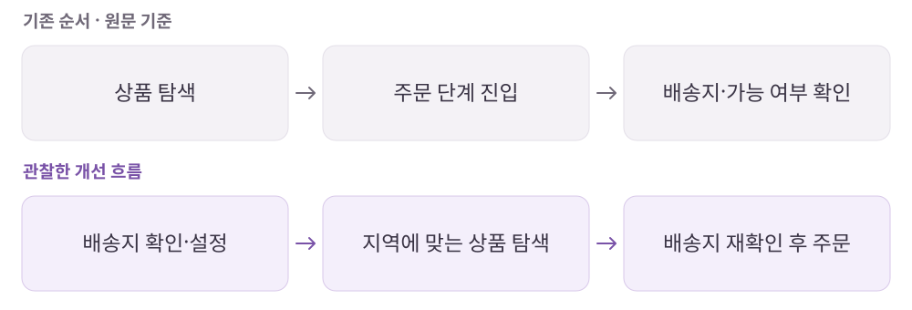

마켓컬리
배송 조건은 결제할 때 알면 너무 늦지 않을까?
신선한 식재료와 식품을 온라인으로 주문하고 배송받는 식품 커머스 플랫폼.
개인 학습 기록 · 원문에 기록한 당시의 경험을 재구성했습니다. 기획 의도는 개인 해석이며 개선안·확인 지표는 검증 전 제안입니다.
01사용자와 해결 방향
누구를 위한 서비스인가장볼 시간이 부족하지만 식재료의 품질과 배송 신뢰를 중요하게 여기는 사용자.
Why · 사용자의 필요
신선하고 건강한 식재료를 먹고 싶지만, 매번 직접 장보고 품질을 비교할 시간은 부족하다.
What · 서비스의 답
상품 큐레이션과 배송 시스템을 묶어, 신선한 식품을 편리하게 주문하고 받을 수 있게 한다.
02핵심 기능과 벤치마킹
- 상품 큐레이션·컬리 온리
- 상품 선택의 기준과 차별화된 구색 제공.
- 배송지 기반 탐색·주문
- 배송 가능 조건을 탐색 전에 반영해 주문 단계의 되돌아감을 줄이는 흐름.
- 배송·회원 혜택
- 배송 도착 정보와 주문 조건을 구매 판단에 연결.
- 활용법·레시피·커뮤니티
- 재료를 어떻게 쓰는지 보여주고 사용 경험을 다음 구매의 근거로 연결.
비교해서 살펴본 지점
- 쿠팡 로켓프레시
- 식품 탐색과 배송 조건, 주문 흐름을 함께 비교.
- 오아시스
- 식품 구매 흐름과 회원가입의 선택·입력 오류 처리를 비교.
03사용자 흐름과 기획 의도
배송지 확인을 상품 탐색 앞으로

관찰한 경험
- 배송지를 먼저 설정하고 해당 지역의 상품을 탐색하는 순서에 주목했습니다.
- 배송 마감·도착 시간, 무료배송 조건, 레시피와 상품의 연결을 살펴봤습니다.
왜 이렇게 설계했을까 · 나의 해석
- 주문 끝에서 알게 될 제약을 탐색 초기에 보여주면 불필요한 선택과 재탐색을 줄일 수 있다고 해석했습니다.
- 레시피는 재료의 사용 맥락을 보여주고, 후기형 콘텐츠는 구매 후 경험을 다시 탐색의 근거로 돌려주는 장치라고 봤습니다.
04문제와 개선 제안
Pain Point · 걸리는 지점
- 원문에서는 장바구니 하단까지 내려가야 무료배송 조건을 확인할 수 있었다.
- 웹에서 찾은 레시피와 앱의 구매 경험이 매끄럽게 이어지지 않았다.
- 작고 많은 카테고리 텍스트가 빠른 구분을 어렵게 했다.
내가 바꿔본다면
- 홈에서 주문 마감과 도착 정보를 먼저 보여줘 사용자가 자신의 일정에 맞춰 판단하도록 한다.
- 장바구니 상단에 무료배송까지 남은 금액을 안내해 조건을 찾는 수고를 줄인다.
- 사용자 음식 경험을 공유하는 채널과 브랜드가 제공하는 레시피 채널을 구분하고, 관련 재료 탐색으로 연결한다.
확인할 지표 · 검증 계획 제안
배송 조건 확인 후 되돌아가는 비율, 장바구니 이탈, 레시피에서 재료 상세로 이동하는 비율을 확인한다.
05장점과 아쉬운 지점
좋았던 점
- 배송지를 먼저 확인해 탐색과 주문의 조건을 맞춘다.
- 쉽게 이해할 수 있는 주문 흐름과 재료의 활용 맥락을 함께 제공한다.
아쉬운 점 · 더 살필 점
- 배송 조건·혜택을 노출하는 위치와 웹·앱 사이의 연결을 더 다듬을 여지가 있다.
06내가 주목한 점
- 서비스의 약속은 화면뿐 아니라 보관·배송 같은 운영 시스템까지 이어져야 한다.
- 쿠폰 기획에서는 종류·유효기간·대상·사용 조건·배포 방식까지 함께 정리할 것.
- 커뮤니티는 인지·구매 판단·사용 후기·재방문으로 이어지는 고객 여정의 장치로 볼 것.
분석 원문마켓컬리 · 노션 원문 ↗